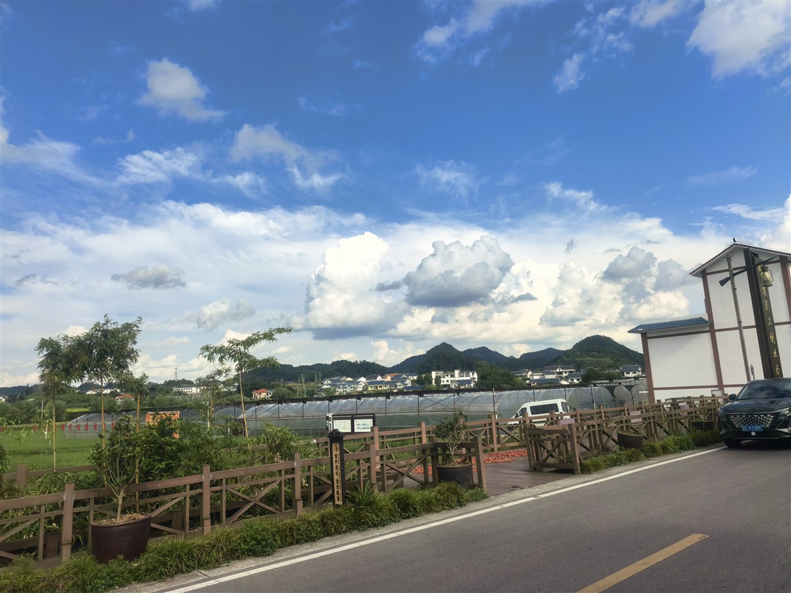

花茂今天靠什么吃饭？三个数字、三条产业线，说清楚。
花茂的经济账本（2025）
71.25 万
年游客人次
2400 万
旅游收入（元）
29650
人均可支配收入（元）
1481 万
村集体积累（元）
数据来源：人民网《党建调研行》2026.7；人民日报《乡村绘新景》2026.6。
花茂是怎么变过来的
- 1935 红军长征途经花茂，部分机关驻扎近一周，播下革命火种。
- 1955 "荒茅田"改名为"花茂"，寓意花繁叶茂、繁荣兴旺。
- 2000 土陶产业下滑，年轻人外出打工，全村外出务工曾达两三千人。
- 2015 习近平总书记到花茂村考察，说"在这里找到乡愁了"。
- 2016 成立蔬菜种植合作社，360亩荒地变高效农田。
- 2025 村集体经济超千万元，外出务工人员从近3000人减至460人。
三条产业线
现代农业：小土变大土

图：中新社，石小杰摄，2025-06
2016年，花茂村成立遵义绿动九丰蔬菜种植专业合作社，采取"村党组织+合作社+农户"模式，把360亩荒地变为高效生态农田。
合作社负责人何万明算过一笔账：曾经亩产值仅千元的土地，如今常规作物跃升至5000元，特色作物可达万元。大棚辐射带动周边种植蔬菜2500亩，直接带动180余人长期就业。
环境无污染、品质优、新鲜度高的生态产品，在本地市场供不应求。
生态：污水垃圾全治理
花茂村实现集中居住区污水处理全覆盖，生活垃圾收运和无害化处理率达到100%。绿水青山是游客愿意来、村民愿意留的基础。
来源：新华网《遵义"绿色答卷"沉甸甸》2026.7
乡村旅游：坐下来住下来

图：实践团实地拍摄
陈义兵的农家乐：2015年创业时只有3间客房和1间厨房。他以本地非遗陶艺为核心，构建"文化体验+美食沉浸"模式，让游客吃饭的同时体验拉坯上釉。如今农家乐年接待游客突破10万人次，营业额500余万元。
"红色之家"王豪：接手父亲的老院子后，修建露营基地、联合旅行社设计旅游线路，2024年纯收入达70万元左右，还解决了村里10多名村民的就业。
花茂的旅游不是"来看一眼就走"，是"坐下来、住下来"。